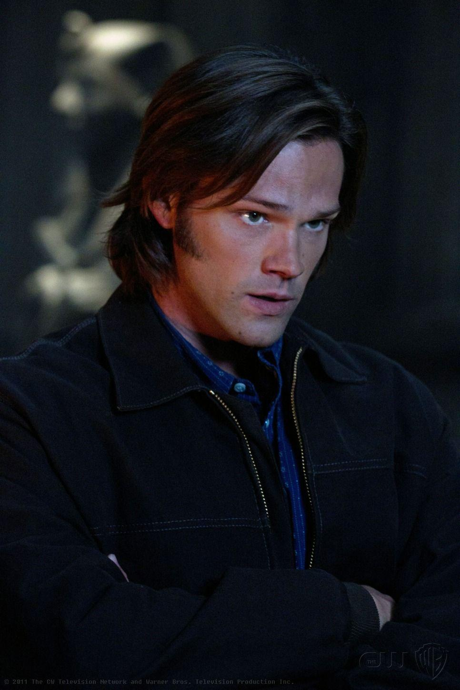

О сериале
Два брата Сэм и Дин Винчестеры становятся свидетелями трагической и загадочной гибели их матери Мэри. Выяснив, что Мэри убило некое сверхъестественное существо, отец мальчиков Джон принимается за его поиски, одновременно обучая сыновей сражаться с нечистой силой. Проходят годы, и Сэм решает оставить охоту и уезжает учиться в колледж. Однако некоторое время спустя его размеренную жизнь нарушает внезапное появление брата, который сообщает, что отец пропал на охоте, и просит помощи Сэма в его поисках. Братья отправляются на поиски, по пути расследуя дело о Женщине в Белом. В конце серии Сэм приезжает домой и видит гибель своей девушки - Джессики. Он решает отправиться с братом в путь.
.png)
О Дине
Дин Винчестер родился 24 января 1979 года в семье Джона и Мэри Винчестер. Он был назван в честь своей бабушки по материнской линии — Дианы Кэмпбелл. Дин был первым ребёнком в семье, он старше своего родного брата Сэма на четыре года, а единокровного брата Адама — на 11 лет.
О Сэме
Сэм Винчестер родился 2 мая 1983 года в семье Джона и Мэри Винчестеров. Сэм — второй ребёнок в семье, он младше своего брата Дина на 4 года и старше Адама на 7 лет. Назван в честь своего деда по матери Сэмюэля Кэмпбелла. Дин — единственный, кому позволено называть его «Сэмми». Кроули же, наоборот, называет его «лосярой» (вероятно из-за его причёски, крупной комплекции и отсутствия соответствующего чувства юмора).
О Кастиэле
Кастиэль был рядовым ангелом, приставленным к Земному гарнизону, чтобы наблюдать за порядком на Земле. Первое известное появление Кастиэля на Земле состоялось в 1901 году, когда он и другие ангелы под предводительством командира гарнизона Ишима прибыли с целью убить серафима Акобеля и его «нефилима» за нарушение законов.
О Кроули
При жизни Кроули носил имя Фергюс Родерик МакЛауд. Он родился в 1661 году в Канисбее, Шотландия. Его матерью была сильная ведьма Ровена. По одной версии, она забеременела на оргии во время зимнего солнцестояния, в которой участвовало множество мужчин. По второй — отцом Фергуса был богатый и женатый мужчина. Ровена родила сына на соломенном коврике, а любовник бросил её почти сразу после его рождения. В любом случае, своего отца Фергус не знал.